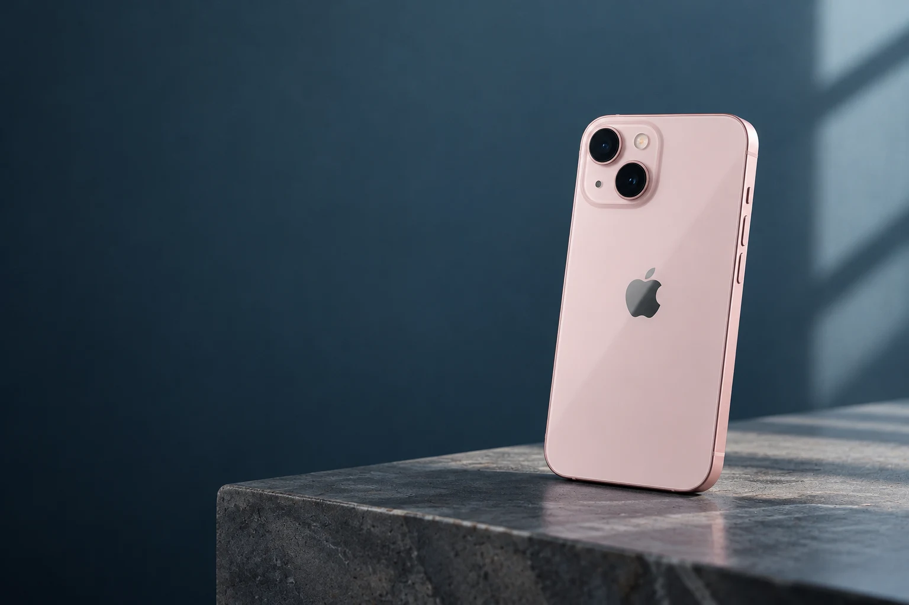

FG Store iPhones · Fátima, Fortaleza
Seu próximo
iPhone.
Mais perto.
Escolher fica mais simples quando a conversa está perto. Encontre seu próximo aparelho com a FG Store, no Fátima.
Fortaleza / CearáCampanha ilustrativa · identidade proposta
Uma loja no seu caminho
No Fátima.
De perto.
Av. Treze de Maio, 1116.
Confirme o horário e combine sua visita antes de sair.
Av. Treze de Maio
Fátima · Fortaleza, CE
Sua escolha começa aqui
Conta para a gente.
O que vem agora?
Prepare uma pergunta do seu jeito. Você confere a mensagem antes de abrir o WhatsApp e decide se quer enviá-la.
Conversar diretamenteAntes de conversar
O que você
quer saber?
Como vejo os modelos disponíveis?
Fale com a FG Store pelo telefone comercial ou pelo WhatsApp. A equipe confirma os aparelhos e as condições atuais.
Posso ir à loja sem combinar?
Confirme o horário e a disponibilidade de atendimento antes da visita. O endereço publicado é Av. Treze de Maio, 1116, Fátima, Fortaleza.
A mensagem é enviada automaticamente?
Não. O site apenas prepara o texto e abre o WhatsApp quando você escolhe essa ação. A decisão final de enviar é sua.
Fortaleza, de perto
O próximo passo
é uma conversa.
Abrir WhatsApp da FGAv. Treze de Maio, 1116 · Fátima
Fortaleza, CE · 60040-530. Endereço e telefone publicados no Google Maps; confirme atendimento antes de visitar.
(85) 98811-9062Ver no Google Maps